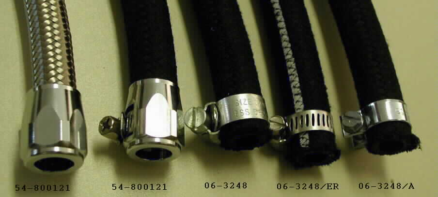

3/8" Oil Hoses and Hose Clamps
The prices listed are current as of
02/12/21.

We stock four types of 3/8" oil hoses. These hoses are sold by the foot and do not come with hose clamps. From the top of the above picture they are:
- Andover Norton Oil Hose "Herringbone", 3/8" I/D (part # 06-7054,
$0.00
per five foot length).
Sorry, but we can only get this hose in five foot lengths.
This hose has a woven stamped exterior just like the original oil hoses and the following hoses can be made from this hose:
- Oil Line, Feed/Return, 17", 3/8" ID (part # 06-2200)
- Oil Line, Return, 12", 3/8" ID (part # 06-3144)
- Oil Line, Feed, 15", 3/8" ID (part # 06-2201)
- Gates Oil Line, 3/8 ID, 300 PSI (part # 54-800005,
$4.85
per foot).
This hose has a woven cloth exterior similar looking to the original oil hoses and the following hoses are made from this hose:
- Oil Line, Feed/Return, 17", 3/8 ID (part # 06-2200/G,
$7.50)
- Oil Line, Return, 12", 3/8 ID (part # 06-3144/G,
$5.00)
- Oil Line, Feed, 15", 3/8 ID (part # 06-2201/G,
$6.70)
- These hoses do not come with any hose clamps, they must be ordered separately.
- Braided Steel Oil Line, 5/16" ID (part # 54-800120,
$11.00
per foot).
This hose will work for the Commando oil lines, but is a bit of a hassle to fit over the male fixtures.
- Braided Steel Oil Line, 3/8" ID (part # 54-800131,
$12.00
per foot).
This hose is not shown in the above picture, but looks just like the 54-800120 hose pictured.
This hose will easly fit over the male fixtures on your Commando and does provides the longest lasting oil hoses, and some might
say the best looking.
The following hoses are made from this hose:
- Oil Line, Feed/Return, 17", Braided Steel (part # 06-2200/A,
$68.34)
- Oil Line, Return, 12", Braided Steel (part # 06-3144/A,
$45.00)
- Oil Line, Feed, 15", Braided Steel (part # 06-2201/A,
$60.30)
- These hoses do come with two 54-800132 end clamps like the 54-800121 clamp shown in the last picture.

We stock three types of 3/8" hose clamps.
The last end clamp pictured, 06-3248/A, is no longer available.
From the left of the above picture they are:
- End Clamp for Braided Oil Line 5/16" ID (part # 54-800121,
$11.25
each). This clamp is normally used with the 5/16" braided steel lines, but can be used with the rubber lines as shown below.
- Andover Norton 5/8" hose clamp (part # 06-3248,
$0.65
each).
- 5/8" hose clamp, Economy (part # 06-3248/ER,
$1.86
each).

Return to Old Britts home page
….. Our Products, Ordering
Oil and Break Line Making Supplies
This page was written and designed by F. H. Eaton
& Associates if you have any questions or comments please
contact us at info@fheaton.com